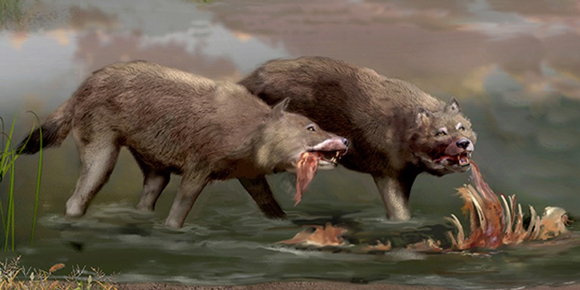

Dire Wolf

The Dire Wolf is a species of wolf which went extinct 13,000 years ago, yet finds itself quite popular these days to many, mainly stemming from their inclusion in hit HBO show and Book Series, Game Of Thrones.
Some Of it's characteristics are:
- Ranging from 75-148lbs (34-67kg)
- 4.1ft(125 cm) in length
- Relatively similar build to the common wolf, but with a more robust skull, and substantially heavier
- Canine teeth are larger and more tensile than that of a regular dog or wolf in modern times